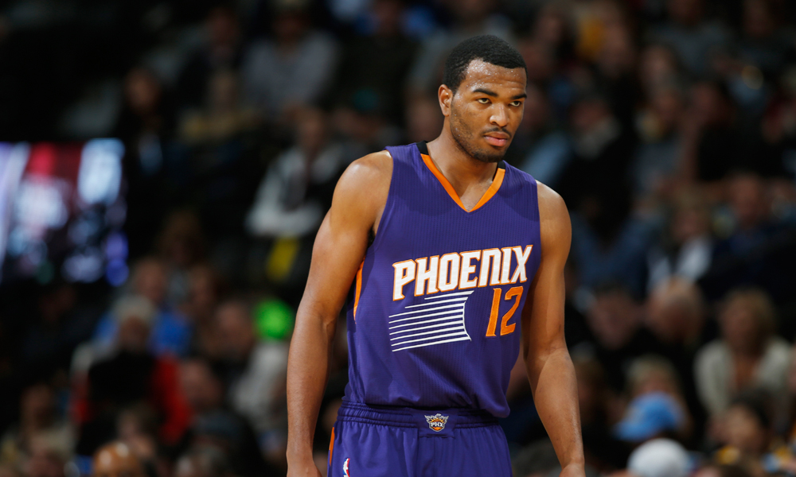
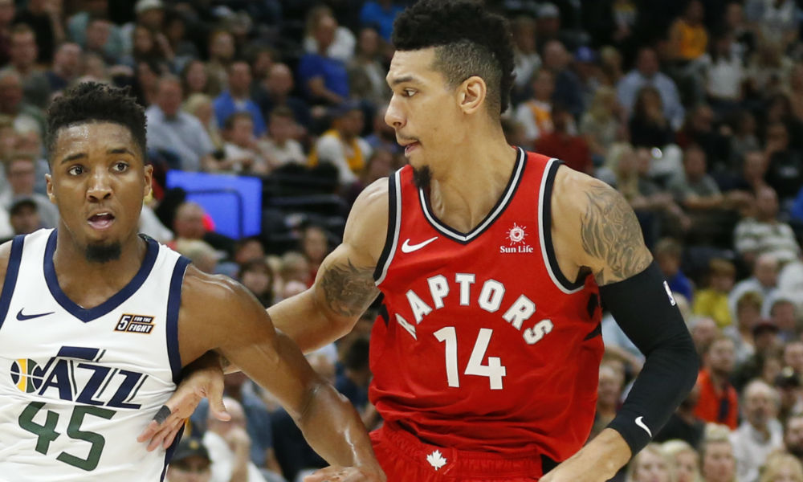

Game 1: Orlando Magic at Los Angeles Lakers
My Pick:
Los Angeles Lakers
Why I'm Rolling with them:
This is based solely on the fact that Lebron is on the Lakers. The Magic have definitely exceeded my expectations, and having Isaac as a rotation player should help. But I think Lebron is a mismatch for whoever Orlando wants to put on him, and he'll be able to abuse the mismatch to lead the Lakers to the win. Lakers take this one in a close 113-110 game.
Game 2: Phoenix Suns at Detroit Pistons
My Pick:
Detroit Pistons
Why I'm Rolling with them:
The Suns are definitely a better team since moving Warren into the starting spot, which is good because I'm very high on TJ Warren as a player. But at the end of the day, Detroit may be the best frontcourt in the league (No other teams really come to mind, Milwaukee maybe?) and I don't think the Suns are going to be abe to overcome that. My money is on the Pistons, 107-100.
 TJ Warren has been playing fantastic since being moved to the starting lineupGame 3: New York Knicks at Memphis Grizzlies
My Pick:
Memphis Grizzlies
Why I'm Rolling with them:
The Grizzlies have continued to suprise me, winning a multitude of games I thought they didn't have the advantage in. I'm not going to pick the Knicks when I think the Grizzlies are just a better team, with Conley and Gasol being the two best players on the court tonight by a pretty large margin. I'm confident the Grizzlies will shut the Knicks down and win 106-98.
Game 4: Philadelphia 76ers at Brooklyn Nets
My Pick:
Philadelphia 76ers
Why I'm Rolling with them:
The 76ers are no longer undefeated at home, coming off of a brutal loss to the Cavaliers of all teams, who have managed to leapfrog Atlanta after 2 straight wins. But Philadelphia should have no problem with the Nets, who have no one to guard Embiid if he gets hot. I have faith in Butler's ability to lock down Russell, and beyond that the starting lineup for this Nets team isn't that good. Sixers, 112-106.
Game 5: Miami Heat at Toronto Raptors
My Pick:
Toronto Raptors
Why I'm Rolling with them:
Kawhi has really started to settle into the Toronto offense, but the Raptors are still missing a shocking amount of 3 pointers compared to their averages last season. Look for that to change against the Heat, who's gritty style of play will stop the Raptors from doing too much close to the basket. Still, the Raptors are the better team and will be allowed to show off a little, as they take this one 119-113.
 Danny Green has been the perfect 3 and D wing for Toronto so far this seasonGame 6: Charlotte Hornets at Atlanta Hawks
My Pick:
Charlotte Hornets
Why I'm Rolling with them:
Kemba Walker is a bad man, and will be able to abuse his matchup with Trae Young to allow the Hornets to take this one. The Hornets are better than their record suggest, and just have trouble closing out close games. Luckily, this one shouldn't be that close as Atlanta has continued to struggle in their past 10 games, failing to win a single one. Charlotte should take it 120-104.
Game 7: Utah Jazz at Sacramento Kings
My Pick:
Sacramento Kings
Why I'm Rolling with them:
The Kings played last night, but they're a young team who should be able to recouperate in time for the back to back facing them. The Jazz have had a lot of questions lately in terms of their offense, and the Kings should be able to push the pace and punish the slower Jazz team for that. Buddy Hield will be able to lock up Donovan Mitchell tonight as the Kings win 117-110.
Game 8: Los Angeles Clippers at Portland Trail Blazers
My Pick:
Los Angeles Clippers
Why I'm Rolling with them:
I think this Clippers team matches up very nicely against the Trail Blazers, with a focus on perimeter defense and good wing players to disrupt the flow of Portland's game. In addition, the Clippers have the far superior bench, and have been putting up great numbers to start the season. The Blazers will have to rely on Lillard and McCollum, who won't be enough tonight to get it done. Clippers 112-106.